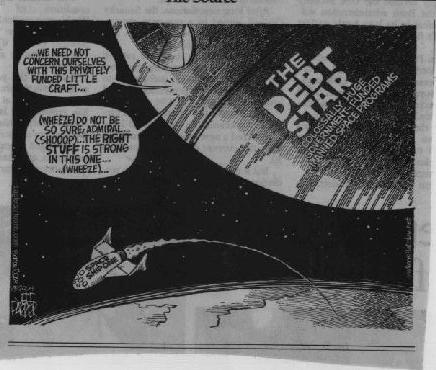

Wednesday, June 30, 2004
SPEAKING OF QUESTIONING EVERYTHING ... if insurors were meeting to fix policy prices ... or if computer makers were meeting to set wholesale costs for their equipment ... we'd all be howling "Price fixing!" The media would wring its collective little hands in horror. Several federal agencies would be rubbing their hands in glee, contemplating billion dollar fines, criminal indictments, long prison sentences and lots and lots of favorable publicity for the crusading regulators and prosecutors. So how come when it's the Federal Reserve meeting today to fix the price of money -- something much more fundamental to the health of our society -- nobody but us wing nuts can work up a lather about the notion?
Posted by Claire @ 12:18 PM CST [Link]
COMING TO TERMS. This arrived this morning from a liberty quote service I subscribe to:
"One's first step in wisdom is to question everything -- and one's last is to come to terms with everything."-- Georg Christoph Lichtenberg (1742-1799)
Safe to I've had the first part down pat since I put my parents through my Terrible Twos. I wonder when the second part will even appear as a distant speck on the horizon in this weird journey?
Posted by Claire @ 09:24 AM CST [Link]
WHY THIS WEEK'S SUPREME COURT DECISIONS ON "DETENTION" are a tragic loss for liberty no matter how the happy media spins them.
Posted by Claire @ 08:35 AM CST [Link]
Tuesday, June 29, 2004
MINDBOGGLING HOW DIFFERENTLY WE SEE THINGS. Rick sent this USA Today op-ed that says yesterday's Supreme Court decisions on "enemy combatants" would make the Founding Fathers proud. Huh?
I can see that on the Guantanamo Bay case; decreeing that even foreign nationals being held by the fedgov have rights to protest their treatment is U.S. courts is a step up from barbaric Bushevik black-hole policy.
But in the Yaser Hamdi case, the Supremes have blandly declared that the U.S. has authority to indefinitely hold a U.S. citizen without charges or trial. Yes, you can protest your treatment in court after you're locked up, Little Citizen. But in the meantime, the government can hold you for years without any reason. No criminal charges. No hearings. No evidence. No trial. This would make the Fouders proud?
Spin, spin, spin! And I don't know whether the editorials or the Founders in their graves are making that whirling sound.
The Supremes say Congress gave the president the authority to lock up citizens without criminal charges or trials. Where did Congress get the authority to abolish yet another part of the Bill of Rights?
Posted by Claire @ 09:06 AM CST [Link]
ORRIN HATCH GETS SCARIER BY THE MINUTE. His latest whim is to entirely ban P2P networks -- and to do so "for the children." Some say this would effectively ban the entire Internet. Not to mention TiVos and CD burners. Hatch's bill would also make it a federal crime for anyone to "counsel" or "induce" others to break his all-encompassing law.
Read this sardonic (and informative) markup of Hatch's statement on the purpose of his proposed INDUCE Act. And hope Mr. Hatch gets carted off to the other sort of hatch sooner, rather than later. (If you can't access that excellent analysis, here's an older, less detailed announcement of the bill.)
We tend to go on about Schumer or Clinton. But truly there's no bigger weirdo control freak in Congress than this guy -- unless it's his usual partner-in-crime and co-sponsor, Dianne Feinstein. If there were more like those two, there would not be a vestige of freedom left in the U.S. Each of us would be told exactly what we can own or do at any moment, and we'd be assigned a personal nanny to ensure that we did -- or is it didn't do? -- exactly what they demand.
What kind of person needs this level of control over others to feel good about himself? What kind of person needs to build elaborate, fantasmagorical card-houses of justification about "children" in order to try to ban a technology he clearly doesn't even begin to understand? This is more than opportunism coupled with cynicism. It's much more than Hatch being an android operated by the RIAA. This is madness.
Posted by Claire @ 08:39 AM CST [Link]
CULTURE JAMMIN' AND GUERILLA ACTIVISM. They're in the tom toms. First, ML Seymour gives her usual glorious list of how-tos for freeway blogging, Simon Jestering, and otherwise kicking up a fuss. Then Bureaucrashers decide to "see just how extreme members of the U.S. Green Party are, or even if they have any sense at all." And guess what?
Posted by Claire @ 08:29 AM CST [Link]
Monday, June 28, 2004
UM ... CAN SOMEBODY PLEASE TELL ME WHICH COPY OF THE BILL OF RIGHTS the U.S. Supreme Court is reading? Their copy doesn't seem to look anything like mine.
Posted by Claire @ 02:44 PM CST [Link]
GOOD SITE; SPYBUSTERS.COM. The page linked here contains additional links to 100+ privacy tips. Some are pretty basic (they're directed at corporations trying to prevent industrial spying). Might be something to share with your less aware friends. Or your boss.
Posted by Claire @ 10:00 AM CST [Link]
THE JUNE 26 ENTRY IN KAREN DE COSTER'S BLOG has haunted me all weekend. If you go there, be sure and read the article she links to. It's long but ... well, necessary. In short, there's yet another elitist scheme afoot to control us unruly masses and our money (and this time it's "money control" in the same sense the elites mean "gun control" -- that is, getting rid of it and replacing it with a weird, complex scheme of trackable transactions and social insurance).
Excessively creepy stuff. My first impulse was to dismiss the information. It is, after all, just some ivory tower denizen's intellectual masturbation. But ... I dunno. Read it and watch the future.
Posted by Claire @ 09:55 AM CST [Link]
FRIENDLY DOG PREVENTS MASS KILLING. Aw ... sweet pup.
But this happened in Canada, where you and I know it simply isn't possible for a man to have had all the guns and ammo the article claims. After all, they have gun control and everybody knows once you have gun control you have no more guns. Right? Well, we can at least hope the guns properly registered in accordance with law C-68. That would have made all the victims feel a lot better, we can be sure.
Posted by Claire @ 09:46 AM CST [Link]
Sunday, June 27, 2004
DON'T YOU JUST LOVE IT? The official Serenity movie Web site is here.
Posted by Claire @ 11:07 PM CST [Link]
IAN HAS BEEN AT THE RANGE AGAIN and brings back this exclusive full-length report on an unusual (and somewhat controversial) battle rifle.
[more]
Range Report: M1 "Tanker" Garand
By Ian McCollumThe M1 Garand, as many of you no doubt know, was America's primary service rifle through World War II and the Korean War. Like the 1911, it is a very well-designed weapon, one of the first of its type (that being semi-auto battle rifle), and retains a dedicated following to this day. When I started looking around for the best battle rifle to get for myself, the M1 caught my attention. However, they fire .30-06 ammunition (which is neither as plentiful nor as cheap as the 7.62x51 NATO), and are longer and heavier (24" barrel, 9.5 lb) than similar rifles. So I dropped the idea, and looked at other possibilities. I kept coming back to the M1, though, and eventually found just what I had in mind: a "tanker" Garand.
Plenty of M1 afficionados will probably cringe at the mere word "tanker." These rifles are shortened M1s (usually with 18" barrels), and many of them are horrible pieces of junk. In the 50s and 60s, they were often made with shot-out barrels and receivers that had been cut in half and welded back together (shudder). They were advertised as being authentic WWII rifles
Posted by Claire @ 04:30 PM CST [Link]
Friday, June 25, 2004

"SOMEBODY GOT IT!" Charles Curley wrote when he sent this cartoon from the Thursday, June 24 Billings Gazette. The somebody was Jeff Parker of Cagle Cartoons. And ain't that the truth?
Posted by Claire @ 08:52 PM CST [Link]
KNOW ANYBODY WHO DOESN'T THINK ITS A BIG DEAL for us to have to ID ourselves to any cop who demands it? Ask them to read and think about this. Cops are now beginning to access commercial -- not law enforcement -- databases using handheld wireless devices.
BOSTON (AP) - A police officer stops you on the street, then taps something into a device in the palm of his hand.The next minute, he knows who your relatives are, who lives in your house, who your neighbors are, the kind of car you drive or boat you own, whether you've been sued and various other tidbits about your life.
Anybody know why Deppity Barney should be entitled to know all that about you, while officials increasingly hide everything about their own activities from We the People? Hm.
Posted by Claire @ 03:34 PM CST [Link]
ADVENTURES IN BACKWOODS ENGINEERING: SHOWER BUILDING. Blogispondent Ian McCollum has been off in the trackless -- or at least plumbingless -- wilderness again. He returns with experience on how to build a backwoods shower.
Adventures in Backwoods EngineeringBy Ian McCollum
Ian here, checking in from another foray into the wilderness. I have some aquaintences who own a piece of vacation property out in the middle of nowhere, and I recently joined them for a few days of camping. They've been wanting to make some rough improvements to make it a bit more comfortable, and I volunteered to help out with the current project: a shower.
Our starting materials were a Solar Shower, a pallet (for a base, to prevent muddy feet), some rope, a pulley, and a selection of various pipes and bars that had been stashed on the property as potentially useful building materials. The goal was to create a setup which actually ran flowing water over a person while they washed (up to this point, on-site bathing had been done with a sponge). Specifically, we wanted a system that would allow convenient washing of hair.
Since we had the Solar Shower, we didn't need to worry about holding the water, metering its output, or heating it. The only thing we had to do was get it high enough up for a person to stand under. Sounds simple enough.
The first setup was straightforward: tie the pulley to the highest available sturdy tree branch, and then run a rope through it to the Shower. Problem was, the highest useable tree branch was only about 6 feet up, and the combination of water bladder, hose, and pulley ate up two or three feet of that. So the Mk I shower was great for eight-year-olds, but not any of us.
The Mk II plan was to built a tripod out of 2x2 boards and metal hardware. So we set out for the nearest town with a hardware store, to
get some cold soda and use a real bathroomget the needed supplies. After looking around the
[more]
Posted by Claire @ 11:33 AM CST [Link]
Thursday, June 24, 2004
HUMANS AS BATTERIES. I thought it was a joke when I first read that Microsoft had patented a method.
Posted by Claire @ 09:52 PM CST [Link]
SPEAKING OF WEIRD. If you have a question about the prison where men disappear mysteriously for years without charges or trials, Kafka gives the answers. Lt. Kafka, that is. Navy Lieutenant Mike Kafka.
Posted by Claire @ 05:47 PM CST [Link]
WHO KNEW YOU COULD MEAN IT SO LITERALLY when you said you got screwed in court? (This from Rick, who finds the weirdest stuff.)
Posted by Claire @ 05:42 PM CST [Link]
LYN NOFZIGER'S MUSINGS. They're so enjoyable, even when you don't agree with the particular opinions. Lyn Nofziger was Ronald Reagan's press secretary (among other things) and he has a likeable way with words. No permalinks on this site, unfortunately. But read his June 21-23, 2004 comments on Clinton's book and his opinion of Rs & Ds.
And yeah, Lyn. What is that about Bill Clinton being forced to "sleep on the couch." In the White House after Hillary found out about Monica? A mansion full of great big bedrooms? And he has to sleep on the couch? (No! It can't be that Clinton is ly ... No. No, it just can't be.)
Posted by Claire @ 10:03 AM CST [Link]
THIS IS ONE OF THE MOST OUTRAGEOUS CASES of "dial 911 and die" that you could ever imagine. And naturally, the courts found once again that the cops have no duty "to serve and protect" anybody.
Posted by Claire @ 09:50 AM CST [Link]
Tuesday, June 22, 2004
IN 45 MINUTES I HAVE TO DO AN INTERVIEW with Pacifica Radio in Los Angeles. Of all things. Pacifica is the mini-network that makes NPR look like Limbaugh dittoheads. But I've talked to the show host, Eben Ray, and she's cool. Pro-gun. Alert to freedom issues. The interview will actually air in the deep middle of some night (I'm not sure which night), between 2-4:00 a.m.. That must be when Pacifica thinks its safe to unlock the doors to the "right wing" of the asylum. Middle of the night. I can tell myself nobody will listen. That's the way I get through interviews -- by assuring myself there's not a single person other than the host and me paying any attention.
I can't believe I promised my editor I'll do more interviews over the next two months. Psyching myself up now. Use those nerves to generate Energy ...
Posted by Claire @ 04:19 PM CST [Link]

IS THIS COOL, OR WHAT? After his famous flight, SpaceShipOne pilot Mike Melvill holds up a sign made by Arizona libertarians Powell Gammill and Ernie Hancock. "SpaceShipOne: GovernmentZero." NPR also mentioned the sign in its report on the event (Scroll down to "Private Manned Rocket Plane Reaches Space."). And for that matter, so did the New York Times and a lot of other newspapers.
(On that same NPR page, you'll also find a report on the Free Town Project's hope of taking over Grafton, NH. That one's not so good: "Town Doesn't Welcome Libertarians.")
Posted by Claire @ 02:26 PM CST [Link]
ON A LIGHTER NOTE ... Historians have speculated about what gave the "Mad Monk" Rasputin such a hold over women -- most notoriously over the Tsarina Alexandra, whose devotion to him helped lead to the Russian revolution. Was it the belief that he could cure the young heir's hemophilia? Was it his piercing eyes, as romantics have written? Welllllll, noooooo. Turns out, it may have been something considerably larger than his eyes.
Posted by Claire @ 12:07 PM CST [Link]
X WRITES TO POINT OUT THAT ANOTHER "Z" has artfully bedeviled tyrants through the years. This in answer to Sunday's entry about Simon Jester in Zimbabwe.
Posted by Claire @ 09:06 AM CST [Link]
Monday, June 21, 2004
"MY ALARM CLOCK IS RINGING. IT'S HALF-PAST CLAIRE WOLFE." C. D. Tavares wrote that today in a post to the AZ-RKBA list.
"Obtaining a suspect's name in the course of a Terry stop serves important government interests," [Justice] Kennedy wrote in today's very unsupreme court decision in the Dudley Hiibel case.
"Of course it does," C.D. responded. "And the Bill of Rights was written expressly to trump ALL 'government interests,' because government is always free to define its interests liberally any way it likes. The Supreme Court is now officially to the point where it has entirely forgotten this principle."
The court has been submitting the Fourth Amendment to the death of a thousand cuts, anyhow. I'm sure most people will think this new decision is no big deal. What's in a name? But do you feel it? There's an air of finality about this decision. Well, not finality, exactly. The court will continue to hack and slash at the corpse of the Bill of Rights. But something's about to break. And at the risk of mixing metaphors, it might be a camel's back.
And this comes on the news that President Bush has pledged to support a bill to make all cops (including retired and off-duty cops) a specially privileged class. As if they weren't already. Just read the cop attitudes in this article if you have any doubt about how police as a class view themselves.
I don't expect a rash of cop killings -- or judge killings -- to happen tomorrow ala Henry Bowman. But the next few years look very ... interesting. I hope I never have to kill anybody. I hope no freedom lover ever does. I still think there are other things to do to create freedom for ourselves right under the noses of those who imagine they own us. But whatever happens next, clearly it's us against them and them against individual rights. And the time for any willing cooperation with "authorities" is over.
I want to ask all the cops out there: "Are you with us or against us?" But the answer is already obvious. This is not intended as a threat against anybody. It's more along the lines of a prediction, and one I really dread to make. But if you're an abusive cop or a statist judge, in the next few years you'd better get the f*k out of freedom's way.
A couple years ago, I'd have ranted fiercely today, and maybe that would have made more interesting writing. But now, it's time for quiet anger. The first time some torturer hits you you might scream. And the second. And the third. And the hundredth. But at some point the screaming stops and the real, implacable hatred begins.
Posted by Claire @ 08:58 PM CST [Link]
5-to-4 THE SUPREMES SAY THAT YOU, AN INNOCENT PERSON, HAVE NO RIGHT to refuse to give your name to a cop. Given that this is an era of law enforcement in which you can also be hauled off a cruise ship in shackles on suspicion that you've neglected to pay a $50 fine or get your whole family slapped in jail because you catch a deputy speeding ... things look a bit grim for We the Non-Government People.
But -- yeehaw!!! -- Spaceship One is back on earth and free men are headed for the stars without the blanking government!!!!!!!!!!!!!!!!!!!!!!!!
Posted by Claire @ 11:31 AM CST [Link]
Sunday, June 20, 2004
DRIVING UP INTO THE WOODS TODAY, I swooshed around a familiar corner into an unexpected sight. A whole hillside -- acres and acres and acres -- was thick and bright with blooming foxglove. Purple and white stalks, up to six feet tall, completely covered last year's clearcut, seemingly having sprung up overnight. The sight was so transcendently beautiful and so surprising I nearly drove off the road. I'd swear there was nothing but ugly post-logging slash there just a week ago.
A couple miles later, off on a side road, we (the dogs were along, too, of course) came around another curve to find five little coyote pups, about three months old, playing in the middle of our path. The dogs let off a caterwaul (or is it a doggerwaul?) and the pups scattered. One little one had a hard time finding a path into the underbrush, so he ran along an embankment for a while at eye-level to the truck. I was able to look right into his little brown eyes from just a few feet away. There was no mama-coyote to be seen, but the pups appeared fat and healthy. And until we came along, they'd been clearly enjoying the sun.
I tend to think of transcendence as being something Very Big. And when I go looking for it, I don't find it. But then tiny transcendence waits, literally, around turns in the road.
Posted by Claire @ 02:26 PM CST [Link]
SIMON JESTER IN ZIMBABWE. Among many other things, he distributes revoluntionary condoms reminding Zimbabweans to "stand up!"
Gunner of the No Quarters blog wrote about this. Be sure to follow Gunner's link to the original story. It's rich with resistential goodies. (I think I just made up that word, resistential. Lessee, it's an adjective for existentialists whose existance is focused on their individual responsibility to resist evil.)
In Zimbabwe, Simon is spreading subversive items and splashing walls with a yellow hand and the letter "Z." In this case, Z stands for Zvakwana -- which means "enough" in the Shona language. If you've been around a while, you might know that this isn't the first time the simple letter Z has made dictators foam at the mouth.
Good blog you got there, Gunner.
Posted by Claire @ 12:55 PM CST [Link]
Saturday, June 19, 2004
LARKEN ROSE HAS LONG TAUNTED AND DARED THE IRS to prosecute him on tax charges. A year ago, the IRS seized his computers but still hasn't found any "tax crimes" to charge him with. Recently, Rose began distributing a well-produced, lucid anti-tax CD -- spreading that puppy around by the tens of thousands and making it available on the Web to anybody with a broadband connection and a Flash player. Now -- suddenly -- IRS agents fortuitously find kiddie porn on Rose's computers. Why do I rather doubt this?
It seems bitterly ironic that for more than half a century, the fedgov used "tax crimes" to get gangsters whose real crimes they couldn't prove. Now it appears the IRS may be stooping to use that instantly demonizing accusation -- pedophile -- to strike back at people whose "tax crimes" they dare not prosecute. Agree with Larken Rose or not, he's an articulate, fearless opponent.
Posted by Claire @ 02:41 PM CST [Link]
ON MONDAY MORNING, THE FIRST FREE SHIP FLIES INTO SPACE. Kirsten Tynan of The Space Entrepreneurship Network has posted all the ways and places to catch coverage of the event. It's awesome that two members of The Claire Files forums, Kirsten and Jac, are actually going to be there.
Posted by Claire @ 02:24 PM CST [Link]
Friday, June 18, 2004
BAD TRIP: HOW THE WAR ON DRUGS IS DESTROYING AMERICA. I knew Joel Miller was compling his writings into a book on the drug war. But I didn't know the book was out until I saw a mention on Bill St. Clair's blog. Joel, the best commentary editor WorldNetDaily ever had, is a fine young writer and human being. He wields his pen with razor sharpness and great good humor. Going to see if I can get my hands on a copy of this.
Posted by Claire @ 04:27 PM CST [Link]
"LITTLE LADIES' LESSONS IN THE WAR ON TERROR." The new Hardyville column is up (uncensored) at Backwoods Home. Happy weekend reading!
But don't get too excited. I said the other day that it was behind schedule because it might be in trouble with my editor over either prostitutes or politics -- both of which it contains. I neglected to mention that it's strictly PG rated, prostitute-wise, although some of the political activity described should certainly be rated something worse than XXX for gross, perverted disgustingness.
The story begins when several of Miss Fitz's Young Ladies decide to go to the Big City ... and run into ... well, read and find out.
Posted by Claire @ 01:56 PM CST [Link]
FEMINISTS4FIREARMS.COM Not much there yet, but a good idea. Forums waiting to be filled with discussion of everything from gun politics to cleaning chemicals. Oh yes, and that ever puzzling question of how a girl gets a really good holster.
Posted by Claire @ 08:35 AM CST [Link]
FOUND THIS while looking for advice on treating a rescue dog with (ouch) chronic abscesses from migrated porcupine quills. Homesteading Today. Nice forums where folks share practical advice on country living. I liked the "Are you a closet survivalist?" thread.
Posted by Claire @ 08:02 AM CST [Link]
Thursday, June 17, 2004
OH LOVELY. Long-range stun guns for crowd control. About to go on the market. Why just Taser one victim when you can soon sweep-shock an entire crowd at distances up to 100 meters?
(You can thank Aaron for brightening your day with this one.)
Posted by Claire @ 01:46 PM CST [Link]
I JUST WATCHED THE 1996 FILM TRAINSPOTTING. Not everybody's cup of tea, this movie. It's about a Scottish heroin addict, his addict pals, and both the bliss and the desperate horrors of their addictions. It's smart, well-made, edgy, with a classic punk soundtrack and an unblinkingly bleak outlook. It has some scenes that are so hard to watch you'll almost gag or want to hide behind your fingers. It's got scenes that are screamingly funny. And what's even weirder is that they're sometimes the same scenes.
It reminded me of Pulp Fiction, not in content but because both are superbly made movies about unlikeable people, and both left me squirming with moral qualms at the same time I enjoyed them (which is a weird sensation). Trainspotting is a film about the quest for meaning and meaningful relationships -- in all the wrong places.
But this blog rant isn't so much about the movie as about people's take on it. A lot of people see this as only as a movie "about drugs." Some see it as either a pro-drug movie or an anti-drug movie. "If you take your teenagers to see Trainspotting, they'll never want to do drugs!" Or "This disgusting film makes drugs sound alluring by claiming that heroin is better than sex!"
What is this pro-anti thing? Okay, it's intriguing that people could see the same movie in such opposite lights -- a measure of the movie's complexity. But why are so many people driven to see it as either? If you made a movie that featured the triumphs and injuries of playing football, you wouldn't have dozens of reviewers trying to decide whether that film was "pro-football" or "anti-football." Nobody muses on whether The Hours is "pro-writer" or "anti-writer." Was Backdraft "pro-firefighter" or "anti-firefighter"? Was Apollo 13 "pro-astronaut" or "anti-astronaut"? Is Mean Girls "pro-teenager" or "anti-teenager"?
It's ridiculous. A complex piece of filmmaking gets reduced to a pro- or anti- message in a lot of people's minds because we've been so conditioned, from Reefer Madness though "this is your brain on drugs" commercials to go into knee-jerk mode whenever the subject of recreational drugs is so much as mentioned. Damn shame. We not only polarize a subject that has far more than two dimensions. We willingly develop a tunnel vision that prevents us from seeing an artistic or social whole. Great acting? Complex story? Superb directing? Characters lovable or creepy or tragic? No matter. It's either "anti-" and therefore valuable or "pro-" and therefore an evil influence.
Same thing in life: druggie=bad, never mind that many intelligent creative people have been serious drug users. I've heard that at least one well-known modern libertarian philosopher was a heroin addict for 10 years. (I don't know him, but friends do.) Yet I suspect if that word got out to the world at large, his past addiction would cancel out the value of his ideas in most people's minds. Strange, the boxes we need to put things and people into.
(Sorry, I notice I seem to be in a real ranting mood today. Riding off on my philosophical high horse.)
Posted by Claire @ 09:42 AM CST [Link]
A SURGICAL IMPLANT TO CHANGE YOUR MOOD. Can an implant to change your opinions be far behind? In fact, an implant to change your moods is an implant to change your opinions. In this case (to treat chronic depression) it's to change your opinion from "The world sux" to "Everything is just fine."
I don't mean to be dismissive of depression. I suffer a kind of chronic, low-level depression myself and have had three episodes in my life where for a year or more I was simply flattened by black horror. But I can't escape a belief that even the deepest depressions are basically rational responses to a world that often does "suck." And that, despite the grand temptation to do anything, take anything, to feel better, the only genuine way out of depression is to keep pushing through it and to solve the underlying problems.
Turning your brain over to total management by "the authorities" (whether medical or political) -- shudder. Anyway, I'm just austere or old-fashioned enough to believe that perpetual happiness, delivered at the flick of a chemical switch, will only turn us into insensitive shits. Some of the best people I know are those who've suffered the most. How else do we develop empathy and insight?
And how do we ever fight to make the world a better place on the day we're all chemically conditioned to see everything as fine, just fine?
Posted by Claire @ 09:09 AM CST [Link]
Wednesday, June 16, 2004
THE STARS ARE COMING "OUT" about their cannabis use. It's an organized campaign, modeled after the one gays used to strip the veil of secrecy and shame from homosexuality. You go, Rodney Dangerfield. (Rodney Dangerfield??? Yep. And Kareem Abdul-Jabbar. And Newt Gingrich. And Jennifer Aniston. And ...)
Posted by Claire @ 09:44 AM CST [Link]
THE NUGE says Innocents Betrayed is "KILLER truth ammo."
Posted by Claire @ 09:39 AM CST [Link]
Tuesday, June 15, 2004
HEY, LOOK AT THIS. They're making a Repairman Jack movie! Hard to say how good it will be with this crew; sounds like they might focus on wild action and (I hope not) neglect the more libertarian aspects of Our Hero. If you don't know Repairman Jack, he's the man with no SSN and no "official" existance from a series of novels by F. Paul Wilson. Jack lives invisibly in New York City and "fixes" situations in which innocent people have been wronged. Those situations often turn out to have a creepily cosmic component. Some of the best Repairman Jack novels are linked from the Wolfesblog book store.
Posted by Claire @ 11:13 PM CST [Link]
SPEAKING OF SILLY NEWS (as I was earlier today) ... I know you're really not supposed to laugh at an axe-murder story. But how can you help it?
Da Silva told the Pretoria High Court that voices in his head had instructed him to become a serial killer, the Star said.He said he wanted to be caught before killing any more people and could not understand why it took police six weeks to catch him after he left clues for them to follow "like Hansel and Gretel."
"It should have taken police two days. It was their job to arrest me. I pay taxes and their salary," the newspaper reported him as saying.
Da Silva, who lived in a swank suburb in South Africa, killed an interior designer because she failed to say anything nice about his decor.
Posted by Claire @ 12:07 PM CST [Link]
AARON ZELMAN AND I HAVE A NEW ARTICLE ONLINE TODAY. It's on kicking victim addition.
Posted by Claire @ 10:11 AM CST [Link]
LAST WEEK WAS BAD NEWS. The juxtaposition of the morally depraved torture memos with the endless state-worship of the Reagan funeral coverage was hard to take. Besides, it was mid-June and spring still hadn't sprung. Cold and gloom -- ugh. A December mood.
Today the sun is shining. And there's not one thing in the news that's absolutely awful. In fact, as Silver points out over at TCF, there's wonderful news of Burt Rutan and Paul Allen headed toward the X Prize -- venturing into space with entirely private funds. I love Rutan's line about government "help" always making everything so expensive.
Even the bad news seems no more than silly -- like this article Jebur27 found about G8 protestors being arrested and charged with giving false names -- when in fact, they didn't give any names. DUH.
Some chivalrous Linux gurus at The Claire Files helped me get my laptop computer back online yesterday -- a great reminder of the good sides of both the Internet and the human race. Today looks so much brighter, literally and figuratively. And it's a pleasure to be computing while lying in bed again, with dogs at my feet and a cat at my side, looking up over the monitor to see mottled sun shining through the branches of the trees.
I'm also enjoying the challenges of working on my first screenplay (although Life, in typical Life fashion, likes to make it hard for me to actually get down and do that work). I like starting with somebody eles's original story, then changing and changing and changing until the old bones have all new flesh on them. Concocting a plot from scratch is terrifying -- something along the lines of exploring the Arctic, I think -- or maybe like venturing into space. So I admire fiction writers who can do that well, and heaven forbid I understand the ones who do it badly. But once somebody else has started at Point A and gone to Point Z, then there's a path and a known destination. Much easier and very gratifying to come in then and say, "Oh look, you could get to Point C so much more interestingly by turning here." Or, "Hey, you can bypass Points M-R altogether and make the journey much more quickly."
Guess I'd better get to it now, though, if we're going to make that journey at all.
Posted by Claire @ 09:34 AM CST [Link]
NO HARDYVILLE COLUMN YET TODAY. Sorry, my fault. First thing, I pushed my deadline awfully hard and didn't get the lastest turned in until yesterday. Second thing, Oliver-the-webmaster tells me that Dave-the-editor has "concerns" about this one.
I don't know whether the concerns are because I wrote about prostitutes or politics. I'm betting on politics; a Bush-bashing column in the print version of BHM darned near got me canned last year. Anyway, I'll keep you posted. If Dave rejects the column, maybe I'll auction it on eBay or something. :-)
Oliver pointed me toward another good piece on BHM. If you read the 'zine, you know Dorothy Ainsworth, the self-described ordinary woman who's set herself to the most extraordinary accomplishments in log-home building -- and then accomplished everything all over again when her newly completed home burned to the ground. Dorothy is also famously endowed, and in the article linked above she does a fine, sensible job answering both male and feminist-female readers who focus on her breasts rather than her achievements. Good observations on the nature of relationships and on recognizing people for what they do, rather than their genetic luck of the draw.
Posted by Claire @ 08:43 AM CST [Link]
Monday, June 14, 2004
I ONCE WROTE AN ARTICLE ABOUT SURNAMES and how governments have imposed and used family names for tracking and taxing us. It's one of my favorites. Now Simon Jester sends word from a far corner of the world -- where one government forbade people to have surnames and another is now "encouraging" and registering surnames, with sometimes quirky results.
Mongolians have been officially encouraged to register surnames since 1997, with most doing so in the past four years. But 10 per cent of the population still don't have one, finding it impossible to trace their family history.Many of them look to Serjee Besud. The director of the Central State Library is Mongolia's premier surname expert and has written a book advising people how to choose an appropriate name. He uses census data from the 18th century when Mongolia was under Manchu Chinese control, as well as army records.
"I tell them to think of something they were born near," he said, "the name of a river, valley or mountain. Or people might call themselves after their occupation. We have many Mr Writers and Mr Hunters, even a Mr Policeman."
Mongolians were traditionally called things like Three Drunk Men or White Horse before the ban - names some are returning to.
A lot of old people refuse to participate in the government program. "They want to die with the name they had all their life," Mr Besud said.
Posted by Claire @ 09:23 AM CST [Link]
SELLING YOUR FINGERPRINTS FOR A SONG Now, let's say you're the developer of a new device. Not one potential user has made a positive comment about that product. On the contrary. The typical email from a potential customer goes like this: "I see no better way of ensuring that [it] won't sell apart from smearing it with excrement before packing it. "
And that isn't even the worst folks have to say.
You might assume that, in some reasonable market, a body would give up on marketing that particular device and maybe look into something more saleable. Like pet rocks. Or dog poo branded products (already big in Asia; I kid you not). But nooooooo. This is the music industry we're talking about. And an MP3 player that requires your fingerprints before allowing you to download or play music sounds like a really, really good idea to certain people.
Bitterly funny article by Andrew Orlowski. Sent along by Vetzine.
Posted by Claire @ 09:14 AM CST [Link]
Friday, June 11, 2004
RUSSMO ON REAGAN. Nailed that one, Russmo. And here's fulsome praise for Reagan from the Coalition to Stop Gun Violence. They credit his great support for the Brady Bill and call him "instrumental" in getting the ugly-gun ban passed. They don't mention that he signed California's 15-day waiting period into law while he was governor. But he did.
It still mystifies me that people still prefer to believe what politicians say in their speeches, rather than what they do.
Posted by Claire @ 05:37 PM CST [Link]
Thursday, June 10, 2004
I KEEP OPENING A COPY OF THE TORTURE MEMO -- at least the most famous of the various torture memos (link goes to article from which you can access the .pdf file). But I can't make myself read it. I've heard, but I can't actually bring myself to look at, American "leaders" saying that physical or mental cruelty isn't torture unless the pain is equivalent to "major organ failure" or death. Cattle prods? Not torture. Being kept naked in icy black cages? Not torture. Shocks to the testicles? Not torture. Being forced to squat in cramped positions for hours? Not torture. Being held in solitary confinement for years, without your family even knowing where you are? Not torture.
I can't bring myself to read a lawyerly discourse on how it's criminal if an American government agent actually intends to inflict that level of pain, but it's perfectly legal if he or she merely has a reasonable expectation that his or her actions will cause intense pain and suffering.
I keep hearing administration apologists justifying this stuff by saying, "Our enemies do it, so why shouldn't we?" And I think, what if we'd gone into WWII, claiming a right to commit mass murder of civilians, simply because our enemies did. Or that we had a right to torture captured German soldiers -- and even kill them, as long as we only claimed a "supposition:" or an "expectation," rather than a full-blown intent to slaughter.
It would be poetic justice if the people who advocated these twisted, lawyerly forms of suffering were subjected to the kind of pain they say isn't really torture. "Oh, I'm sorry, Mr. Harvard grad. I know that broomstick we just shoved up there hurt a bit. But that memo you wrote said it wasn't torture. So here we go again ..."
Still hope it never happens like that. Please, let's just let this country come back to its senses -- especially it's sense of decency.
I know it's denial. But as long as I don't actually read the memo I can tell myself every one of the news reports is wrong and that no American administration ever has, or ever would, use twisted logic and polilte legal language to justify becoming exactly like the worst enemies of human life and human freedom.
Posted by Claire @ 11:26 AM CST [Link]
WE DOG OWNERS KNEW IT ALL ALONG. They really do understand what we're saying.
Posted by Claire @ 10:41 AM CST [Link]
Wednesday, June 9, 2004
"RON-TV: ALL REAGAN, ALL THE TIME." That's what Debra calls the endless coverage her husband's been watching on MSNBC. And ain't that the truth?
NPR's the only mainstream media I get, but damn, they're at least "Half Reagan, Half the Time." I was in the truck for an hour this afternoon, listening to coverage that went something like this:
[Respectfully hushed tones] Yes, LeeAnne, the catafalque has just moved exactly 3.26 meters down the avenue. Progress is ponderous because heartbroken peasant women from the steppes are constantly throwing themselves in front of the procession, after being checked for bombs, guns, knives, and knitting needles by the heroic motherland security cadre, of course. Two point seven more meters now, LeeAnne, and ... Wait ... wait ... what's this? The third horse drawing the caisson has just taken a dump. It was a very reverent dump, LeeAnne, I wish all the world could have experienced it ... truly a dump all the world will remember forever ... a profoundly touching moment in what might be one of the last photo ops of the Reagan legacy ... and there ... yes, there come the ceremonial guards from each of the services, to gently scoop every minute manure fragment for posterity. I'm sure it will be carefully preserved and placed next to the Great Leader in the glass mausoleum being prepared to enshirne his earthly body ...
Faugh!
The fuss being made over Reagan is approximately the same degree of fuss that was made over John Kennedy in the days after his assassination. More so, in some ways. I don't remember any national holiday being declared for JFK. So we've come to the point in our endless state worship where a 93-year-old who dies in his bed 16 years after leaving office is adulated as much as a "fallen warrior" shot down in the prime of his life and the middle of his term in office. Sick. Absolutely sick.
Now, compare this coverage to the coverage that might be given if, say, the world's greatest scientist died -- a man or woman who'd discovered a cure for a terrible disease. Or a great inventor. They'd get five minutes -- if they're lucky.
This is not an anti-Reagan screed. He was no worse (and no better) than any other president. It's about what our country is becoming. For the first several days after his death, NPR reporters kept referring the to "national funeral" planned for this week. Somebody must have clued them in to the terminology, because this afternoon they switched to the more usual "state funeral." But they truly might as well hold a funeral for our nation, if this sort of wallowing state-worship is what we've come to. Ronald Reagan was a man with an extraordinary career and he certainly deserves credit for that. But let's have some perspective!
There's at least some hope in the hinterlands, though. Ever since the sign went up in our local post office window, announcing they'd be closed Friday so everybody could spend the whole day wearing sackcloth, wailing, and rending their garments over the Tragic Loss of Our Glorious Ex Ruler, the postmaster says he's been hearing an earful from the locals, who didn't think much of Reagan as an actor, didn't give a damn about him as a politician, and don't see why some old dude with Alzheimers who hasn't been on the national scene in years should cause them to miss their mail. Now that sounds like a nice, properly skeptical and disrespectful-of-authority American attitude.
At least now when the P.O. rushes the Ronald Reagan memorial stamp into production, as they did with Richard Nixon in such unholy haste, we're likely to get the self-sticky variety. Thank heaven! When Nixon was suddenly our Great Posthumous National Hero (and lets not ask how the Ultimate Slimeball Tricky Dick made that transition), we were expected to lick his backside -- something we can probably avoid with Ronnie.
Posted by Claire @ 09:27 PM CST [Link]
Tuesday, June 8, 2004
I AWOKE EARLY THIS MORNING TO A BROKEN NET CONNECTION. Turned out to be a dead ethernet card. But first, pre-tea (meaning without working gray cells), I spent a while checking out the DSL modem and cables. In the cloudy, soft pre-dawn, I put on my slippers and wandered outside to fetch a spare cable from the yurt. I love early mornings, especially ones like this, still and slightly cool but showing promise of morphing into beautiful warm days. But ever since I've had eternal connectedness, I've tended to spend the days' first hours huddled in bed with the laptop computer, surfing the news, reading e-mail, and making blog entries. I don't get outside until the day is really day, and no longer mysterious, promising morning. I often don't get to work until I'm already feeling glazed over from e-gazing, and because of that, I tend to be less productive.
Standing out on the hill, looking over the valley with the clouds turning pink overhead was a good reminder. There's still life beyond Totalitarian Information Awareness, beyond the NSA or DARPA, beyond the IRS, and beyond the netly lures of news and blogs. Beyond the endness effing "communication" we're so locked into these days.
If the news that TIA is alive and well turns out to be true, I'm considering severing most of my last remaining connections with the e-world. (I'd still access the net a few hours a week via public computers). I won't do it precipitously. And if I did it at all, I'd require a complete re-think about little matters like how to earn a living, since I currently live or die by Internet and telephone.
But if I did disconnect (and I'm by no means saying -- yet -- that I will), I'd also make time to reconnect with something more fundamental. Could be an interesting experiment. After 23 years on computer and more than 10 years on the Net, to pull that plug from the wall of Cabin Sweet Cabin and tune in better to earth, wind, fire, and water. And to my own earthly self.
A fantasy, probably. But one that feels very good this morning.
(I'm writing this from a backup computer. I haven't used it in months & it's not fully synched with the laptop. So if I owe you e-mail or anything, hang on. I'm relying on sneakernet at the moment for some things, and even sneakernet is compromised by an unreliable floppy drive on the backup machine.)
Posted by Claire @ 09:22 AM CST [Link]
WHY THE CONTINUING SILENCE ON TIA? I haven't seen a single other news source (yet) pick up on Capitol Hill Blue's news that the Pentagon's Total Information Awareness system is alive and currently tracking every American who ever uses a bank, credit card, or telephone. I began to think maybe the story really was from The Onion.
Keep in mind that this is all unconfirmed. What CHB describes is exactly how we know the fedgov does operate -- but who can be sure yet if it's the way the fedgov is operating, when it comes to TIA? Still ... today CHB follows up with another story that begins by telling how our phone conversations are recorded and analysed for "terrorist" language. The article ends on one bright, but feeble, note of hope: news that a handful of contractors have refused to work on TIA because they consider it so utterly unethical.
Unethical is right. But that's only part of the problem. Totalitarian is a more complete descriptor.
Aaron Zelman and I wrote a couple of years ago to say that, based on historical evidence, the U.S. was becoming -- but was not yet -- a police state. This is still true in a way. We have some freedoms that the police states of the past haven't allowed their citizens. But TIA, operating on a desire to surveill all the people all of the time, bypasses mere "police state" and -- in that one aspect of our lives -- leaps straight into an exalted status: If CHB's stories are true, TIA is the single largest totalitarian act ever committed by any government on earth.
That we know of. So far.
Posted by Claire @ 09:01 AM CST [Link]
Monday, June 7, 2004
YOU THOUGHT CONGRESS KILLED TIA? Congress thought so, too. But the Pentagon's Total Information Awareness program is alive and
... virtually every financial transaction of every American is now recorded and monitored by the federal government. Any bank transaction, all credit card charges plus phone records, credit reports, travel and even health records are captured in real time by the DARPA computers.
Right now. As we speak. Deposit your paycheck and the Pentagon knows. Buy a CD player, a boat, or new suit and the Pentagon knows (and presumably has no scruples about passing the information on to anyone else). Not only that, but the system automatically builds a profile based on your activity, and if you deviate from your norms -- or buy anything "suspicious" -- you're automatically flagged.
Not surprising. We all knew TIA wouldn't really go away. But it's disgusting enough to make you vomit. Total, minute-by-minute datasharing with the U.S. military, all on the direct orders of the Bush administration. All while Congress stood there and, pardon my French, jacked itself off.
And what did the banks and credit card companies and for that matter the medical clinics have to say when ordered to turn over their records to the military?
It's hard to believe things have really gotten this bad this fast in this country. Hard to believe. I'm waiting for someone to tell me that this report came from The Onion and not from Capitol Hill Blue.
Posted by Claire @ 02:49 PM CST [Link]
"THE DOG DAYS OF THE WAR PARTY." I can't say how accurate this analysis of the decline and fall of the NeoCons may be. Spies, lies, drunks, dupes, and backstabbing on top of the criminally insane American empire-building we've seen in action for the last year. So says Pat Buchanan. The NeoCons are falling and that a modern Night of the Long Knives is underway as the military and CIA finally begin tearing down the men who lied and manipulated us into Iraq. Neither Buchanan nor WorldNetDaily (these days) would be my idea of an impeccable source. But given supporting evidence such as the newly uncovered Bush adinistration report claiming the U.S. is exempt from laws against torture ... it looks as if America might finally be about to lance the boil of "empire conservativism." The pus that oozes forth may be disgusting, but the action is healing.
But whoever thought that famous "American system of checks and balances" our Civics teachers told us about would come down to the unelected military and a unelected and hyper-secretive bunch of spies (belatedly) keeping a bunch of unelected bureaucrats, think-tankers, and presidential advisers in check?
Posted by Claire @ 02:13 PM CST [Link]
Sunday, June 6, 2004
WENT TO THE BIG CITY TODAY TO SEE HARRY POTTER AND THE PRISONER OF AZKABAN Did the whole mall and eight-plex thing, which I never do unless a movie sounds exceptionally good. This one was. It was far and away the best of the three HP movies to date. The first two were fun, but pedestrian, films about magic. This one has magic.
I'm sure any review you read will use the word "dark." And that's so. Not only is the theme darker than the earlier two films, but visually it's darker and softer -- with rain, snow, mist, dark lochs, and much more evocative lighting than before. Hogwarts has been transformed. (Literally; the new director Alfonso Cuaron has moved the famous school of witchcraft and wizardry into much more dramatic Scottish terrain). Although the ending(s) do go on and on and on, the whole film is a treat. Even the credits. They're lovingly done -- and if you stick around to watch them, look for the very distinctive footprints of one professor walking around the names at one point. I only wish the earlier two movies were a better match for this one; it would make the inevitable Harry Potter marathon much more fun, once all seven films are out on DVD.
Oh, and dark or not, it's got the funniest Dursley sequence so far. Rebellious adolescent Harry isn't taking much guff any more, and his temper tantrum has hilarous results.
Posted by Claire @ 08:13 PM CST [Link]
Saturday, June 5, 2004
RONALD REAGAN IS DEAD. He grew the government and boosted the drug war into high gear -- an act that goes on poisoning our culture and destroying our freedoms to this day. He never did any major downsizing of government or got rid of a single cabinet-level department. Even his great scheme of supply-side economics had increasing government revenues as its goal. Yet while aiming to increase revenue, he also ushered in the era of the mega-deficit. (A trend that was ended, of course, by "liberal" Clinton and now taken up again in even grander style by the "conservative" GWB. And if you need a perfect illustration of why terms like liberal and conservative and right and left and R and D are meaningless, there it surely is.)
I've never understood why conservatives regard the Great Statist Reagan as a hero. But he spoke some powerfully inspiring words, even if he didn't govern by them. And compared to what we have now, he looks positively libertarian.
Posted by Claire @ 05:08 PM CST [Link]
NOW THIS GUY WAS REALLY MAD AT LOCAL GOVERNMENT. And offers a glimpse of the power of home-workship guerrilla resistance.
(Ah, the Claire Filers have even better information on this guy Plinker-MS calls "Carl Drega in a bulldozer.")
Posted by Claire @ 04:16 PM CST [Link]
"BEATING SPECIALIST BAKER." An American soldier volunteers for a response-team training exercise at Guantanamo Bay and finds out the very, very hard way what's considered acceptable treatment of prisoners. A military investigation decreed "no misconduct."
Posted by Claire @ 04:13 PM CST [Link]
Thursday, June 3, 2004

THIS IS A REAL RFID CHIP. No kidding. It leaped off a page at Rense.com that was otherwise filled with funny faux photos and bogus billboards. But this is no fake. The swastika RFID chip is made by these folks.
I don't usually hang out at Rense.com. A little too conspiratorial for my tastes. But apparently the respectable Ms. De Coster might. It was an entry on her blog that led me to the Hitler chip.
Definitely another illustration of how "The truth is stranger than fiction -- and harder to make up."
Posted by Claire @ 01:00 PM CST [Link]
"IF YOU HAVEN'T DONE ANYTHING WRONG YOU DON'T HAVE TO WORRY." Isn't that what proponents of expanding government "security" power are always telling us? Well then, why is the government continuing to go after a group of artists -- alleging bioterrorism -- long after it's become obvious that their work is entirely peaceful and legal? Weird case!
(Tks KA)
Posted by Claire @ 10:54 AM CST [Link]
"LET'S GO FLY A KITE" by Sean Corrigan. A tale in simple, fanciful terms, of where funny-money madness is taking us. Good reading. Maybe great reading for friends who haven't gotten it yet.
Posted by Claire @ 09:14 AM CST [Link]
Wednesday, June 2, 2004
PRIVATE CITIZENS ARE PILOTING INTO SPACE. The date is set for June 21. You go, Burt Rutan! And hey, maybe once we get out there we'll eventually rebel against tyrant Earth.
(Thanks Pat and Simon Jester.)
Posted by Claire @ 10:38 PM CST [Link]
I LOVE LIBERALS. We need liberals. Liberals are good. Why? Because they're so damn entertaining in their sputtering righteousness. The latest left-wing Flapdoodle du Jour is this: National Public Radio and PBS television are becoming right wing! Yes, right wing.
Now, I confess, I listen to NPR regularly. Even faithfully. The local NPR affiliate is the only station I can get out here in the uber-boonies that has thoughtful talk on it. Never mind that it's often crazy-making talk. But right wing? From vast personal experience, I can assure you that the typical NPR story is still something along the lines of:
- Racial discrimination is depriving migrant Hispanic workers of their right to an Ivy-League education.
- Racial discrimination is causing black children to suffer from a lack of quality educational television programming, but in spite of that, plucky little Jamal, who is confined to a wheelchair and forced to care for his crack-addicted mother, has just won the local science fair with his project on the harmful effects of global warming on minority children.
- Racial discrimination is causing Sudanese immigrants in New York City to be deprived of their right to live performances of classical music, but a new bill in Congress will remedy that with a grant of $15 billion.
- Villagers in the high, snow-capped mountains of Quaintistan still make traditional handicrafts just as their neolithic ancestors did, despite the encroaching tide of racial discrimination and air pollution being brought to Quaintistan by right-wing capitalist entrepreneurs from America.
Listen long and hard as I might (and I do), I somehow fail to hear all those "right-wing" stories about how the government is too big, or how gun laws destroy peaceable people's lives, or how the income tax is immoral. I've never heard NPR use the terms "social security" and "Ponzi scheme" in the same sentence. NPR is perpetually mum on the fact that U.S. money is phony as a $3 bill and getting even more worthless. I don't even hear those other kind of "right wing" stories about how war is good or how big business is good for America.
So how could anybody imagine NPR has gone right wing on us?
Well, if you can bear the horror of it, the Bush administration is playing politics with the federal tax money funneled into the "public" airwaves by the Corporation for Public Broadcasting. Yes, a dastardly and impure administration is actually playing politics with government funding. Never in the history of the world has any pro-big-government left-wing administration dared to commit such an atrocity.
And besides that, the group FAIR just announced results of a study on what sort of commentators NPR relied on. They didn't study the content of the stories, mind you. Nor the slant of the stories. Just whether the commentators were "diverse" enough. FAIR discovered that vast numbers of those commentators come from 1) elite organizations, 2) the corporate world, and 3) the Bush administration.
Well, by golly, yes. NPR and elite go together like Quaintistani peasants and handicrafts, that's true. Doesn't matter whether they're from Brookings or Heritage; if they come from a think tank or a foundation, NPR loves 'em. Still, I'm mystified about how that makes NPR "right-wing."
And yes, NPR often does give corporate spokespeople a sentence or two to defend themselves in a five-minute report about how pollution from Evil Big Business is causing the demise of the Tierra del Fuegan six-legged tree frog. And -- alas! -- they also give corporate spokespeople time to make pitches for why they need more government subsidies to save them from the latest dire problem caused by unbridled cut-throat free-market competition. (I wish I knew where to find as much unbridled free-market business as NPR finds.)
And yes, NPR does get comments from members of the Bush administration regularly. Excuse me, FAIR, but that's the administration that's in power. What, do you expect NPR to seek its governmental news from Lyndon Baines Johnson? Franklin Delano Roosevelt?
Recently, somebody smarter than I am (and I wish I could remember who it was) remarked that the real bias in the media isn't "left" or "right." The real bias in the media -- and it applies equally to NPR an the Notorious Fox News -- is toward big government and centralized control by elites. Truer words were never spoken.
Well, you've gotta laugh at the liberal hysterics, if only to keep your eyes from crossing. But that's all I can say about the situation at the moment because it's now time for me to get in my truck and drive around catching the latest reports on how racial discrimination is keeping single Latina mothers in east L.A. from being able to afford to remove their gang tattoos so that they can go on to productive jobs in tax-funded social work, providing urgently needed assistance to illegal, but incredibly plucky, immigrants who've been driven out of their idyllic homes in Central America after water pollution produced by ruthless free-market profiteers from America destroyed the habitat of the spiny-beaked purple glub fish, which has been their tribe's source of food since neolithic times.
Posted by Claire @ 09:35 AM CST [Link]
SO BIG, SCARY ANTI-DRUG ADS turn out to evoke pro-drug thoughts in a large percentage of viewers. "Buying marijuana funds terrorism? Well, then -- grow your own!"
Not a surprise. A few years before America decided to have "a drug problem" my schoolkid interest in drugs was sparked and fed by the annual school assembly featuring the town police chief. His juicy descriptions of cheap thrills and debauchery made that forbidden fruit sound SO tasty.
Katherine Albrecht projects the effect of drug ads into the near future, when a different sort of propaganda campaign may be running:
I wonder if the "Turn in on your freedom-loving rebel scum neighbors" ads that will almost inevitably run in a few years will have the same effect. Can't you just see it?FREEDOM IS SLAVERY. CONSUME AND OBEY. THE STATE IS GOD. FREEDOM IS EVIL. SLAVERY IS GOOD. DEATH TO REBELS. BOW TO THE STATE.
Meanwhile... "Hmmm, these ads have really got me thinking. Why does the government has such a bug up its craw about freedom lately? Maybe I'd better look into some civil disobedience like reading a book or thinking or something...."
We can only hope.
Posted by Claire @ 08:56 AM CST [Link]
Tuesday, June 1, 2004
I HAVE A FRIEND WITH WHOM I SWAP MOVIE REVIEWS. We don't always share the same tastes. I sometimes roll my eyes at the romantic comedies he favors. He pokes fun at me for getting too enthusiastic about "subtitled musical anime."
But we've also led each other to interesting films we wouldn't have found without our regular review exchanges. In addition to a couple of good romantic comedies, Oliver opened my eyes to gritty films like Fight Club and Dirty Pretty Things. And he in turn rented Life is Beautiful and rated that fantastical exultant Italian film a solid 10. I even got him to watch -- and like! -- the subtitled, four-hour-long Bollywood musical about a cricket match, Lagaan. (No doubt it helped that Lagaan is also about a tax revolt and a romance.)
So our review exchanges have led to great discoveries. Plus we agree enthusiastically on fun fare like the Back to the Future series or School of Rock and on great, weird comedies like Being John Malkovich. But it's always a little unpredictable whether we'll agree or shake our heads at each other's choices.
So I felt unsure when I first recommended the series Firefly, and then downright embarrassed when I babbled and raved about it to him for three weeks in a row.
Firefly is magical, though. Here's what Oliver had to say:
-----
Disc two was just as good as the first. I'm really looking forward to the final two, but also dreading it because I know when they're done I'll want more. Is it possible this show tanked in the ratings? It's just so good, I'd have thought Fox would nurse it and let it build and audience. ...
[After finishing the final episode] Claire, I may never forgive you for getting me to watch this series. There is no disc 5 or 6 or 66 and I want more. As I'm sitting here typing this about five minutes after watching the last episode, I actually feel a sense of loss. I really want to know what happens to these characters. Does the Doc ever kiss Kaylee, do Mal and Inara ever admit
[more]
Posted by Claire @ 10:47 AM CST [Link]
WHOO HOO, VIN! Nice plug for The Freedom Outlaw's Handbook. Thank you! Vin calls it "an easy-to-read starter kit for newbies to the freedom movement" -- which about sums it up.
Even more fun to read was the rest of Vin's column, which describes a book not to read -- Caitlin Kelly's Blown Away: American Women and Guns. I haven't read the thing and I do believe I'll give it a miss. But apparently Ms. Kelly not only repeats many of the old frauds about the danger of owning guns, but passes along a few less well-known idiocies. Rifles for home defense? Lovely. Provided your intention is to shoot an "intruder" who's 100 yards away.
Posted by Claire @ 06:08 AM CST [Link]
"HARDYVILLE DOES DRUGS." The new column is up at Backwoods Home. A personal favorite of mine, this is the tale of my first experience with the Hardyville Drug Store when I was just new in town.